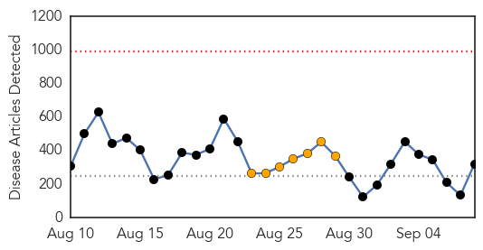
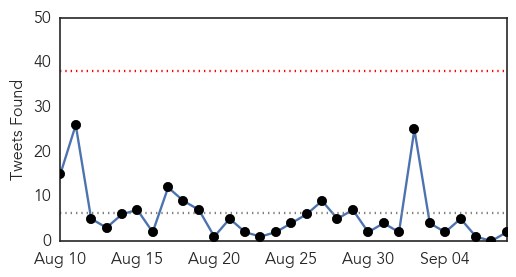
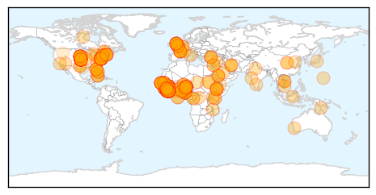
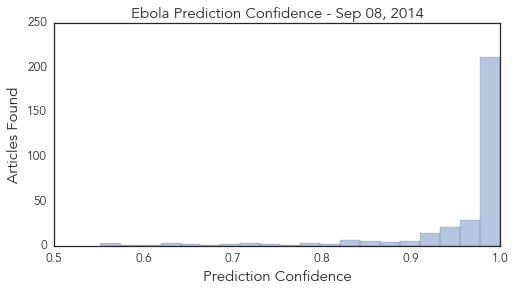

Toggle navigation
Early Warning
Daily Alerts
Ebola
Sep 08, 2014
Compare to:
-
Dengue Fever
Hemmorhagic Fever
Mold/Fungal Infection
Influenza
Meningitis
Pertussis / Whooping Cough
Middle East Respiratory Syndrome
Cholera
Hepatitis
Chikungunya
Yellow Fever
Bubonic Plague
West Nile Virus
Swine Flu
Measles
Unknown
Mumps
30 Day Trends
Web: 0
alerts
, 7
warnings
Twitter: 1
alerts
, 0
warnings
Top Articles:
Showing top 50 articles...
1.000
Ebola spreads exponentially in Liberia, many more cases soon: WHO
1.000
Another U.S. Missionary Doctor Contracts Ebola in Liberia
1.000
WHO Expects Liberia's Ebola Caseload Will Surge
1.000
Ebola Resurgence in Guinea, Liberia Highlights West Africa's Containment Concerns
1.000
Ebola outbreak is a unique 'perfect storm'
1.000
Preventing Ebola in Workplaces, Articles
1.000
Ebola: health fears stop British journalist from hosting awards
1.000
Ebola is surging in places it had been beaten back
1.000
Ebola making a comeback in places it was contained
1.000
Is Ebola outbreak hysteria drawing attention away from diseases that kill more people?
1.000
Africans fight against pandemics
1.000
Ebola map shows people in more African regions risk infection from animals
1.000
Ebola spreads exponentially in Liberia, many more cases soon: WHO
1.000
UPDATE 1-Ebola map shows people in more African regions risk infection from animals
1.000
Ebola spreading rapidly in Liberia
1.000
Latest U.S. Ebola Patient Getting Better, Doctors Report
1.000
‘Many thousands of new cases’ of Ebola expected in Liberia
1.000
the edge of knowledge
1.000
Ebola is surging in places it had been beaten back
1.000
US and UK to send military personnel to help West Africa tackle Ebola outbreak
1.000
US and UK to send military personnel to help West Africa tackle Ebola outbreak
1.000
US and UK to send military personnel to help West Africa tackle Ebola outbreak
1.000
Ebola spreads exponentially in Liberia
1.000
Ebola Outbreak Attributed to Economic Underdevelopment, Political Crises
1.000
U.S., Britain to send troops to help fight Ebola in West Africa
1.000
JABSOM research examines Ebola relative
1.000
Liberia to see thousands of new cases as Ebola spreads 'exponentially'
1.000
WHO Predicts Thousands Of New Ebola Cases In Liberia
1.000
Sierra Leone lockdown won't contain Ebola
1.000
Ebola is surging in places it had been beaten back
1.000
US and UK to send military personnel to help West Africa tackle Ebola outbreak
1.000
Liberia and Sierra Leone update Ebola case counts
1.000
Ebola is Surging in Places it Had Been Beaten Back
1.000
Ebola is surging in places it had been beaten back
1.000
U.S., Britain to send military help in battle against Ebola
1.000
Ebola virus is surging in places where it was beaten back: experts
1.000
The most from the coast
1.000
Liberia's grim Ebola situation prompts call for 'nonconventional' help
1.000
Liberia 'Faces Huge Surge' Says WHO
1.000
Ebola is surging in places it had been beaten back
1.000
Ebola crisis: Liberia 'faces huge surge' says WHO
1.000
US and UK to send military personnel to help West Africa tackle Ebola outbreak
1.000
Ebola is surging in places it had been beaten back
1.000
Ebola spreads exponentially in Liberia, many more cases soon: WHO
1.000
Ebola is surging in places it had been beaten back
1.000
WHO: Liberia will see thousands of new Ebola cases
1.000
Ebola spreads exponentially in Liberia, many more cases soon-WHO
1.000
WHO: Liberia will see thousands of new Ebola cases
1.000
Ebola Spreading, Many More Cases Soon - WHO
1.000
AU warns efforts to stop Ebola are stigmatizing
Top Tweets:
0.878
Early Epidemic Dynamics of the West African 2014 Ebola Outbreak: Estimates Derived with a Simple Two-Parameter Model http://t.co/DYVtZPpRMe
0.864
RT: Studies that have detected Ebola virus using only immunofluorescent techniques "totally unreliable" h/t http://…
0.615
An Ebola vaccine, GlobalHealthSecurity at local health depts., and new ClimateChange challenges. HealthSecurity http://t.co/H1JhGDbj22
0.613
RT: Ebola situation in Liberia: non-conventional interventions needed http://t.co/n8TK0e6Pci
0.538
RT: Another Ebola patient coming to Atlanta hospital http://t.co/J408VgCXdN
0.508
RT: Sierra Leone lockdown will not help halt Ebola: MSF http://t.co/ckEP27syVH
Web/News Articles

Tweets

Article Locations

Article Confidences
